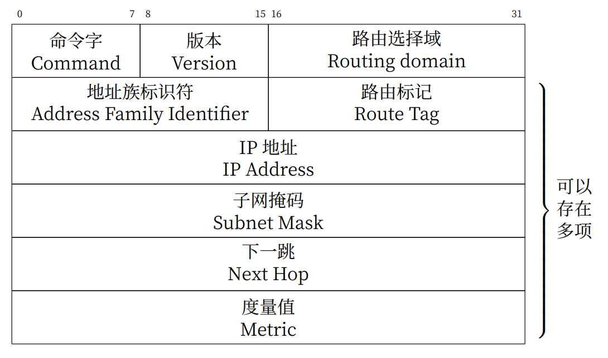
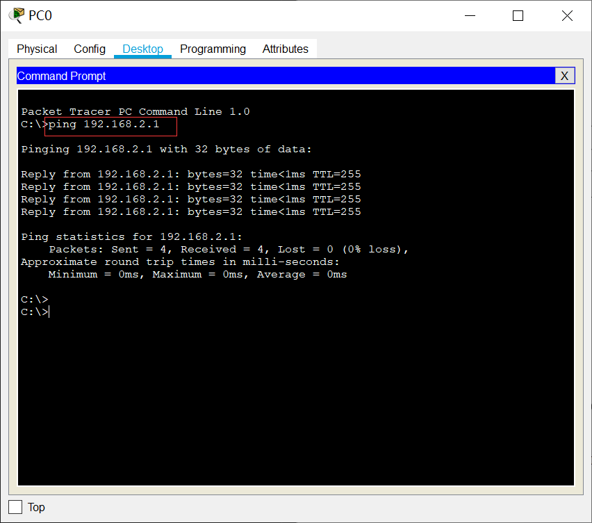
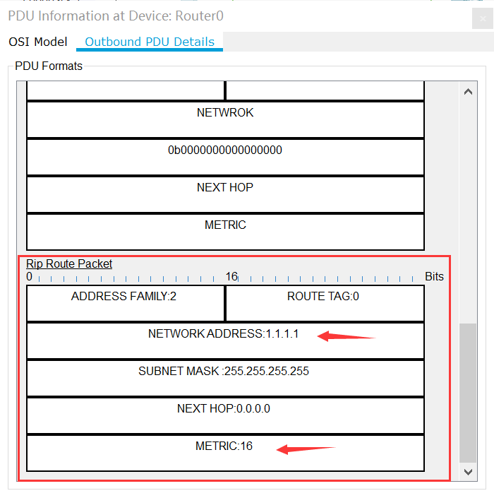

1. 实验目的
了解动态路由协议的原理与应用。
熟悉RIP协议的特点，理解水平分割、触发更新和毒性逆转的作用。
掌握RIP协议的配置方法。
2. 实验任务
掌握RIP的配置方法，在cisc packet tracer上截取RIP报文，理解触发更新和水平分割对RIP收敛速度和避免环路的作用。
3. 实验原理
3.1. RIP概要
RIP（Routing Information Protocol）是基于距离矢量算法的一种路由协议，它使用“跳数”，即指所经过的路由器的个数来衡量到达目标地址的路由距离，广泛应用于LAN。BSD UNIX系统的routed进程采用了RIP协议，由此RIP得到了迅速的普及。
3.2. RIP协议特点
RIP协议特点可归纳如下：
30秒一次，将自己所知道的路由信息广播出去。如果一个路由在180秒内未被刷，就认为网络被断开。
根据距离向量生成路由控制表。路由控制表针对同一个网络如果有两条路径，那么选择距离较短的一个。如果距离相等，通常是随机选择一个或是轮换使用。
但是，这两个特点使得RIP明显存在一些问题。如下图所示，当网络A存在通信故障时，路由器A虽然认为自己与网络A的连接已经断开了，但是它还会收到路由器B曾经获知的路由消息，这就会让路由器A误认为还可以通过路由器B到达网络A。这样就会导致无限计数（Counting to Infinity），出现路由环路。


为了解决这个问题，RIP采取以下两种方法：
最长跳数不超过16（16被定义成无穷大，即目标网络或主机不可达）。这个信息只保留120秒。一旦超过这个时间，信息将被删除。
采用 水平分割 （Split Horizon）方法，即路由器不在把所收到的路由信息原路返回给发送端。
然而，在环路有多余的情况下，需要很长时间才能产生正确的路由信息。在有些情况下（比如帧中继Hub-spoke网络结构、X.25等非广播多路访问网络）需要关闭水平分割，否则将无法正常传递路由信息。
为了尽可能解决这个问题，RIP又提供了毒性逆转（Posion Reverse）和触发更新（Triggered Update）机制。
毒性逆转 是水平分割的一种变型。当网络发送故障时，它不是不再发送这个消息，而是发送一个距离为16的消息。
触发更新 是指当网络发生变化时，路由器就立即发送其新的路由表，而不是等待30秒。
提示
通过上述方法，RIP的最大网络范围在16跳以内，而且路由器想要达到一个稳定的状态也需要花一段时间。如果想要明确地掌握网络结构，可以采用路由协议相对复杂的OSPF（Open Short Path First）路由协议，在本实验中不做重点介绍。
3.3. RIP报文格式
RIP协议使用UDP协议的520端口来发送和接收RIP报文。其报文格式如下图所示。
命令字(Command)：1为请求报文，2为应答报文。
版本 (Version)：指生成RIP报文时所使用的版本，RIP只有两个版本:版本1和版本2。
路由选择域 (Routing Domain)：路由域标号为0的是缺省的路由域。
地址族标识（Address Family Identifier）：报文中所携带地址的类型，提供了和以前版本的兼容性。IP协议簇对应的值为2，该字段使RIP可以用于多种不同的协议簇。
路由标记(Route Tag) ：用于传递自治系统的标号。
IP地址(IP Address)：可以是主机、网格，甚至是一个缺省网关地址。
子网掩码(Subnet Mask)：子网掩码信息是RIP协议在多种环境中变得更有用，并且允许在网络中使用变长掩码。
下一跳地址(Next Hop)：支持下一跳地址优化了在使用多种路由协议的网络环境中的路由器。
度量值（Metric）：这个值经过路由器时被递增。数量标准有效的范围是在1～15之间。
4. 实验环境与分组
cisco packet tracer模拟器，一人一组。
5. 实验组网

备注
上述组网图中存在四种类型局域网，分别是1.1.1.1/32、192.168.1.0/24、192.168.2.0/24、192.168.3.0/24。
Loopback是一种纯软件性质的虚拟接口，Loopback接口一旦被创建，将一直保持UP状态，直到被删除。路由器和三层交换机都可以配置Loopback接口。
IP地址表：
设备名称 |
IP地址 |
|---|---|
R0-f0/1 |
192.168.2.1/24 |
R0-f0/0 |
192.168.1.1/24 |
R1-f0/1 |
192.168.3.1/24 |
R1-f0/0 |
192.168.1.2/24 |
R1-loopback 1 |
1.1.1.1/32 |
6. 实验步骤
6.1. 搭建网络拓扑
打开Cisco Packet Tracer软件绘制出组网图。
路由器型号：1841 交换机型号：2960
备注
路由器和路由器之间的连接线需要使用Copper Cross Over(交叉线)。交换机和路由器、交换机和计算机使用Copper Straight-Through(直通线)
搭建完网络拓扑图后，记得保存好！
6.2. 配置三台PC的IP地址
按照下表设置PC0、PC1和PC2这三台电脑的IP地址。
计算机 |
IP地址 |
|---|---|
PC0 |
192.168.2.11/24 |
PC1 |
192.168.3.13/24 |
PC2 |
192.168.3.14/24 |
6.3. 配置路由器、交换机基本信息和计算机的网关
6.3.1. 在路由器R0上配置端口的IP地址
路由器在第一次配置时会启动配置向导界面，通常选择no，不进入对话模式，而是直接进入正常配置模式。

配置R0的基本信息。
1Router>enable
2Router#configure terminal
3Router(config)#hostname R0 // 重命名为R0
4Router(config)#no ip domain-lookup // 用于防止DNS解析的命令。如果没有这条命令，当你输入错误的命令时，cisco会尝试连接DNS服务器进行域名解析，浪费时间。
5
6R0(config)#interface f0/0 // 打开f0/0接口（默认接口关闭）
7R0(config-if)#ip address 192.168.1.1 255.255.255.0 //配置f0/0接口ip地址
8R0(config-if)#no shutdown // 打开f0/0接口
9R0(config-if)#exit
10
11R0(config)#interface f0/1 // 进入f0/1接口模式
12R0(config-if)#ip address 192.168.2.1 255.255.255.0 //配置f0/1接口ip地址
13R0(config-if)#no shutdown // 打开f0/1接口（默认接口关闭）
14R0(config-if)#exit
15
16R0(config)#interface loopback 1 //配置Loopback回环接口
17R0(config-if)#ip address 1.1.1.1 255.255.255.255 //配置回环地址
18R0(config-if)#exit
19R0(config)#exit
6.3.2. 查看R0路由表

6.3.3. 在路由器R1上配置端口的IP地址
配置R1的基本信息
1Router>enable
2Router#configure terminal
3Router(config)#hostname R1 // 重命名为R1
4Router(config)#no ip domain-lookup // 用于防止DNS解析的命令。
5
6
7R1(config)#interface f0/0 // 进入f0/0接口模式
8R1(config-if)#ip address 192.168.1.2 255.255.255.0 //配置f0/0接口ip地址
9R1(config-if)#no shutdown // 打开f0/0接口
10R1(config-if)#exit
11
12R1(config)#interface f0/1 // 进入f0/1接口模式
13R1(config-if)#ip address 192.168.3.1 255.255.255.0 //配置f0/1接口ip地址
14R1(config-if)#no shutdown // 打开f0/1接口
15R1(config-if)#exit
16R1(config)#exit
17R1#
6.3.4. 查看R1路由表，并观察R0和R1的连通性

R1配置完成后，R0和R1已经连通。此时，再次查看R0路由表，已经可以看到有192.168.1.0/24网段了。

6.3.5. 配置三台计算机的网关
PC0网关为192.168.2.1

PC1和PC2网关为192.168.3.1，配置方法和PC0一样。
PC0通过默认网关将发往未知网络的数据交由R0处理。同理PC1和PC2通过默认网关将数据交给R1。
6.3.6. 在R0上ping R1验证连通性

6.3.7. 在PC0上ping R0验证连通性
{kind=link}
6.3.8. 在PC1上ping R1验证连通性

6.3.9. 在PC0上ping PC1验证连通性

此时，还没有设置RIP路由协议，PC0和PC1还不能相互连通。
6.4. 配置RIP协议及查看路由表，并测试连通性
为两台路由器配置RIP协议，并通告其网络。具体命令如下：
6.4.1. 在路由器R0上启用RIP协议
在R0的全局模式下配置：
1R0(config)#router rip //启用RIP协议
2R0(config-router)#version 2 // 设置版本号为RIP v2
3
4R0(config-router)#network 192.168.1.0 //通告直连网段，在网段192.168.1.0上启动RIP
5R0(config-router)#network 192.168.2.0 //通告直连网段，在网段192.168.2.0上启动RIP
6R0(config-router)#network 1.0.0.0 //通告直连网段，在网段1.0.0.0上启动RIP
7R0(config-router)#no auto-summary //关闭自动汇总功能
8R0(config-router)#exit
9R0(config)#exit
6.4.2. 路由器R1上启用RIP协议
在R2全局模式下配置：
1R1(config)#router rip //启用RIP协议
2R1(config-router)#version 2 // 设置版本号为RIP v2
3
4R1(config-router)#network 192.168.1.0 //通告直连网段，在网段192.168.1.0上启动RIP
5R1(config-router)#network 192.168.3.0 //通告直连网段，在网段192.168.3.0上启动RIP
6R1(config-router)#no auto-summary //关闭自动汇总功能
7R1(config-router)#exit
8R1(config)#exit
9R1#
6.4.3. 查看R0和R1的路由表
R0路由表:

此时，R0上多了一条RIP路由信息，即要达到192.168.3.0/24网段，下一个转发端口是192.168.1.2。
R1路由表:

此时，R1上多了两条RIP路由信息。
6.4.4. 测试PC0到PC1之间的连通性

配置RIP路由协议后，PC0能访问到PC1了。
6.5. 触发更新和水平分割
6.5.1. 进入仿真调试模式
在Cisco Packet Tracer软件菜单栏View -> Simulation Mode，在工作区的右边出现一个“Simulation Panel”，此时就进入了仿真模式。

在“Event List Filters-Visible Events”窗口栏中显示捕获的协议，这里面有很多是我们不需要观察的协议。单击Show All/None，Event List Filters-Visible Events窗口栏中变成None。然后，再点击Edit Filters。在弹出的窗口里，选择IPv4选项卡，选择ARP、ICMP、RIP这三种协议，本实验只需观察这三种协议即可。

单击“Play”三角形按钮，让网络设备开始运行。此时，我们可以观察数据包的传输过程。包转发需要一些时间，请耐心等待。


上图中，在17.482s时刻，从Router0发出来了两个RIP数据包。点击“forward”前向三角按钮，在17.483s，这两个数据包分别被传输到Switch0和Router1。再次点击“forward”前向三角按钮，数据包在17.484s到达PC0，而之前到达Router1的数据没有在此时转发出来。这是因为Router1收到RIP协议数据包后，需要更新自身的路由表，然后等到它的下一个发包时刻再转发出路由数据包。22.991s，此时轮到Router1对外转发它的路由信息。22.992s数据包分别到达Router0和Switch1。由此我们可以观察数据包的传输过程。
在上图中，我们可以看到Router0第一次发出RIP数据包是在17.482s，第二次发送RIP数据包是在45.467s，第三次是在74.955s，相差间隔差不多是30s，这也验证了RIP是每30s将自己所知道的路由信息广播出去。
6.5.2. 观察触发更新报文
单击“Play”键停止抓包，然后单击“Reset Simulation”清空抓包信息。
再按下“Play”键开始抓包。然后在R1上使用命令no interface loopback1断开回环地址loopback 1，此时Simultaion Panel面板上显示结果如下:

图中，21.263s，Router0发出两个RIP数据包。当我们输入no interface loopback 1命令断开loopback 1时，在21.265s，Router0又发出两个RIP数据包。此时，距离上一个Router0发出数据的时间还没有到达30s。
单击21.265s行的Router0，在弹出窗口的Outbound PDU Details选项卡中，可以看到这个RIP数据包携带有达到1.1.1.1网络的跳数为16，也就是不可达。21.266s，到达Router1后，Router1也立刻转发该路由信息。也就是，一条路有切断，全网通告。
{kind=link}
由此可知，在网络发生改变时，RIP路由协议会及时触发更新，而不是等到下一个30s后才发出路由信息。
6.5.3. 观察取消水平分割前后报文差异
参照上述配置方式 在路由器R0上配置端口的IP地址，重新配置好loopback 1。
单击“Play”键停止抓包，然后单击“Reset Simulation”清空抓包信息。再按下“Play”键开始抓包。接下来，我们观察打开/关闭水平分割的报文。
我们找到从Router0发出到Switch0的RIP数据包。以下图为例，在8.120s，Switch0收到的RIP路由信息有两条，显示到达192.168.1.0网段需要1跳，到达192.168.3.0网段需要2跳。

同样在8.120s，Router1也收到Router0的RIP数据包，在该数据包中，只有到达1.1.1.1网段和192.168.2.0的路由信息，没有192.168.1.0网段和192.168.3.0网段的路由信息。这是因为开启了水平分割（rip配置后默认启动水平分割），Router0是从F0/0端口接收学习到192.168.1.0网段和192.168.3.0网段的路由信息，就不会再从该接口发回去。

接着，取消Router0的水平分割，我们继续观察RIP数据包。
1R0(config)#interface f0/0
2R0(config-if)#no ip split-horizon

如上图所示，在取消水平分割后，Router1收到Router0的4条路由协议，多了2条来自192.168.1.0和192.168.3.0的报文。